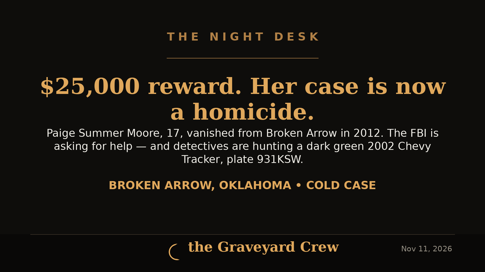

November 11, 2026 · 3 min read
FBI offers $25,000 reward in Paige Moore cold case — Broken Arrow teen's 2012 disappearance now ruled a homicide

Photos: FBI (Paige Summer Moore missing-person poster); headline card by The Night Desk
FBI offers $25,000 reward in Paige Moore cold case — Broken Arrow teen's 2012 disappearance now ruled a homicide
Thirteen years after Paige Summer Moore walked out of her parents' Broken Arrow, Oklahoma home and vanished, the FBI is putting real money on the table to solve her case.
The FBI's Oklahoma City Field Office is offering a reward of up to $25,000 for information leading to the recovery of Paige Summer Moore and/or the arrest and conviction of the individual(s) responsible for her disappearance. The Bureau is investigating alongside the Broken Arrow Police Department, the Muscogee (Creek) Nation Lighthorse Tribal Police Department, and the Bureau of Indian Affairs.
The night she disappeared — July 10, 2012
Moore, who also used the nicknames "Peg" and "Penny," was reported missing by her family on July 10, 2012. She was 17 years old, 5 feet 4 inches tall and about 145 pounds, with red/auburn hair and blue eyes. Her date of birth is October 5, 1995.
According to Broken Arrow police, Moore left her home in the 1100 block of North Ironwood Avenue in the early morning hours wearing what she typically wore to bed — a gray Goo-Goo Dolls shirt with long black sleeves and red slippers. She was supposed to attend summer school that day. She never arrived, and she has never been seen or heard from again.
Reclassified as a homicide
For more than a decade, Moore's case was carried as a missing-person investigation. That changed this year: the Broken Arrow Police Department reclassified her case as a homicide after spending a year interviewing more than 70 people, including potential suspects, and uncovering new information.
Paige Moore's remains have still not been located. Her parents, Bobbie and Michael Moore, and her friends have never stopped pushing for the case to be solved.
The vehicle detectives want to find
Detectives are trying to locate a vehicle they believe may have been used in the homicide:
- 2002 dark green Chevrolet Tracker
- Last license plate: Oklahoma 931KSW (registration expired in 2016)
- Last four of the VIN: "1305"
- Believed possibly abandoned in the Tulsa area
The last registered owner told detectives he sold the vehicle to a man named "Ramon" but could provide no further information.
"We believe there are still individuals who hold key details that could help us locate the vehicle, uncover the whereabouts of Paige Moore's remains, and identify those responsible for her death." — Ethan Hutchins, Broken Arrow Police Department Public Information Coordinator
How to submit a tip
- FBI Oklahoma City Field Office: (405) 290-7770
- FBI tips online: tips.fbi.gov
- Det. Leon Rademacher, Broken Arrow PD: 918-451-8200 ext. 8731
- Crime Stoppers (anonymous): 918-596-COPS or TulsaCrimeStoppers.org
The National Center for Missing & Exploited Children has also released an age-progressed image of what Moore might look like as an adult. After thirteen years, someone in the Tulsa area knows where that green Tracker went — and where Paige is.
Source: FBI — read the original report
← Back to latest stories